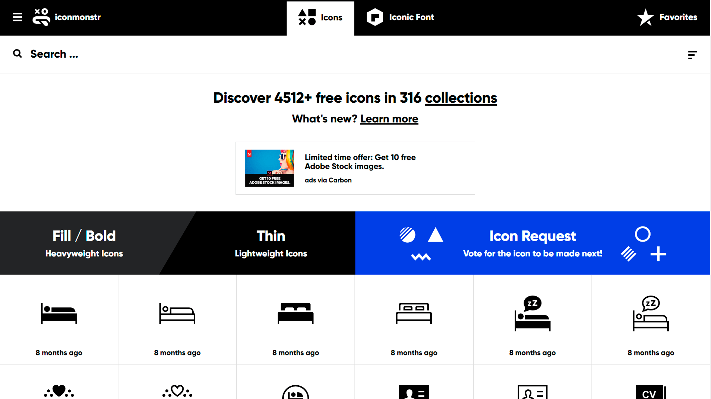
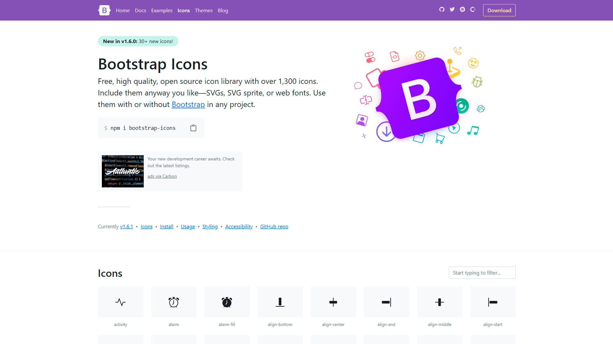
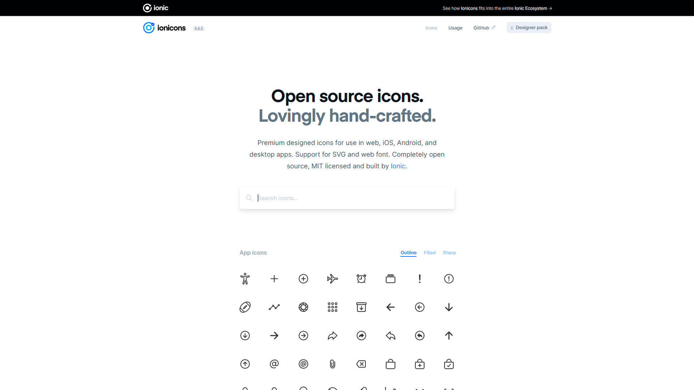

Ubuntu con interfaz gráfica en Windows 10/11 con Windows Subsystem for Linux
Traigo esta tarea de instalación y configuración de Ubuntu 20.04 LTS con entorno gráfico dentro de Windows 10/11, haciendo uso de Windows Subsystem for Linux a su última versión (WSL2).
¿Qué es WSL?.
Windows Subsystem for Linux es una capa
de compatibilidad que ha agregado Microsoft en Windows 10 y 11 para entornos GNU/Linux dentro de Windows, lo
anterior quiere decir que podrás usar ciertas distribuciones de GNU/Linux en Windows 10/11. La primera versión
de WSL llevó al intérprete de comandos que se instala en la mayoría de las distribuciones
GNU/Linux (estamos hablando del shell bash) a Windows,
permitiendo ejecutar binarios desde Windows. Para la versión 2 de
WSL hubo grandes mejoras en cuando rendimiento, ya que WSL2 utiliza un núcleo Linux real. Se pueden utilizar
aplicaciones de GNU/Linux desde Windows 10/11 utilizando
direcciones IP remotas, así mismo
permite la gestión de una distribución GNU/Linux con entorno
gráfico.
Requisitos para instalar Ubuntu 20.04 LTS en WSL
- Mínima versión de Windows 10: Versión 2004 (OS Build 19041.329)
- Tener instalado WSL2 en Windows 10/11
- Instalar Ubuntu 20.04 LTS
- Instalar la interfaz gráfica de Ubuntu 20.04 LTS
Primero, se debe que versión de Windows tenemos. Con ejecutar el comando winver
veremos la versión de Windows.
Una vez comprobado la versión de Windows, tenenemos que instalar 2 características: Plataforma de máquina virtual y Subsistema de Windows para Linux
- iconmonstr 
- FeatherIcons
- Bootstrap Icons 
- ionicons 
- css.gg
- Tabler Icons
- Material Icons
- Remix Icon
- Eva Icons
- EXTRA: Font Awesome
Iconmonstr encontramos iconos para casi todos los gustos, con imágenes relativas a las redes sociales, a herramientas habituales en internet o a opciones más genéricas que podemos utilizar para identificar las opciones de nuestro proyecto. Todos ellos son en descarga gratuita aunque hay que respetar las licencias bajo las cuáles se conceden, por los logos de las redes sociales.
También tiene su propia fuente CDN que puedes usar que contiene más de 300 iconos.

Feather es una colección de iconos de código abierto simplemente hermosos. Cada ícono está diseñado en una cuadrícula 24x24 con énfasis en la simplicidad, consistencia y flexibilidad. Contiene 286 iconos que puedes descargar y es Open Source.
También tiene su propia fuente CDN o instalar con como paquete NPM. Os dejo también su enlace a GitHub que explica como usarlo.
Como no, Bootstrap también te ofrece iconos gratuitos y Open Source que puedes usarlo en tu proyecto usando su CDN o instalarlo con NPM. Contiene más de 1000 iconos que puedes descargar y no hace falta usar el framework de Bootstrap para usar sus iconos.
Iconos de diseño premium para usar en aplicaciones web, iOS, Android y de escritorio. Completamente Open Source, con licencia del MIT y construido por Ionic. Contiene más de 500 iconos.
Os dejo su repositorio de GitHub.

Si te ha gustado los iconos de Ionic, los de css.gg son de la misma calidad y contiene más de 700 iconos. Su repositorio de GitHub explica su instalación.

Más de 1250 iconos de píxeles perfectos para diseño web. Iconos gratuitos y Open Source diseñados para hacer que cualquier proyecto se sienta moderno. Su repositorio de GitHub explica su uso y os dejo el enlace de su CDN.

Si estamos haciendo una aplicación web que sea con el mismo sistema de diseño que de Google, tengo que recomendar su propio sitios de iconos de Material UI.
Remix Icon es un conjunto de símbolos de código abierto de estilo neutro elaborados para diseñadores y desarrolladores. Remix Icon tiene licencia de Apache License Version 2.0 por lo que todos los iconos son gratuitos tanto para uso personal como comercial. Si el icono que necesitas no está en la colección, puedes solicitarlo y la comunidad GitHub puede ayudarte.
Y por últinmo, otro paquete de iconos que contiene sumando iconos bordeados y rellenados, son mas de 400 iconos. Estos iconos encajan bien con proyectos relacionados con la salud. Os dejo su repositorio de GitHub y su CDN.

Font Awesome es el paquete de iconos más utilizado en diseño web. Contiene en su versión gratuita, mas de 1500 iconos que se puede utilizar, pero no es Open Source, pero seguro que encuentras un icono especiual que busques y Font Awesome lo tenga. En su versión de pago contiene más de 6200 iconos.